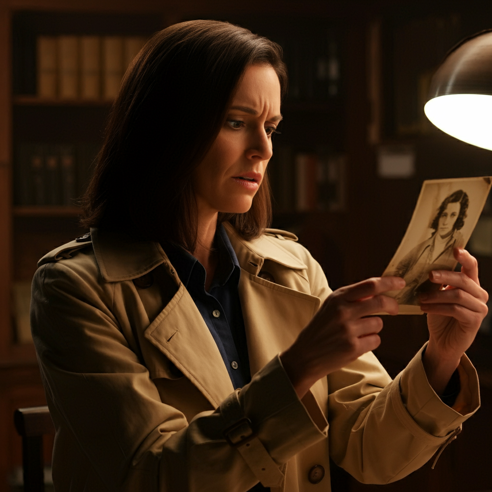

The Victim’s Secrets:
Image created with ImageFX
As Detective Alvarez delves into Adeline’s life, she uncovers that the art dealer was deeply involved in a secret project with ties to a shady art forgery ring. One of the pieces in Adeline's collection—a supposed masterpiece—is the key to unraveling the mystery. It turns out that Cece had been unknowingly supplying Adeline with forgeries, believing them to be real works of art. Was this the motive for Cece to kill her friend? Or had Harry found out about the illegal dealings and silenced her?